Весёлые и простые научные эксперименты для детей и взрослых.
Неиссякаемая бутылка

Физика
Бутылка, из которой никогда не заканчивается вода. Эксперимент о воздушном давлении и гравитации.
| Gilla: | Dela: | |
Видео

Материалы
- 1 пластиковая бутылка, не прозрачная
- 1 трубка — Самый сложный материал для этой демонстрации. Трубка должна соответствовать двум требованиям: (1) она должна быть как минимум на 2-3 см (1 дюйм) длиннее, чем высота бутылки, и (2) она должна быть достаточно толстой, чтобы едва не проходить через горлышко бутылки. Трубка с внешним диаметром 22 мм (7/8 дюйма), что является стандартным размером для сантехники, идеально подходит для стандартной бутылки из-под газировки.
- 1 пила (чтобы отпилить трубку)
- 1 отвертка
- 1 игла (или что-то другое, чтобы сделать отверстие в бутылке)
- 1 ручка
- Духовка
- Вода
Шаг 1

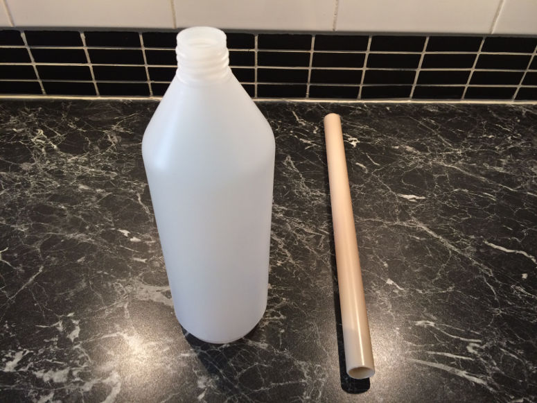
Шаг 2
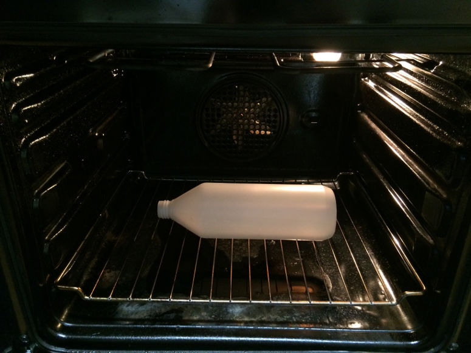
Шаг 3
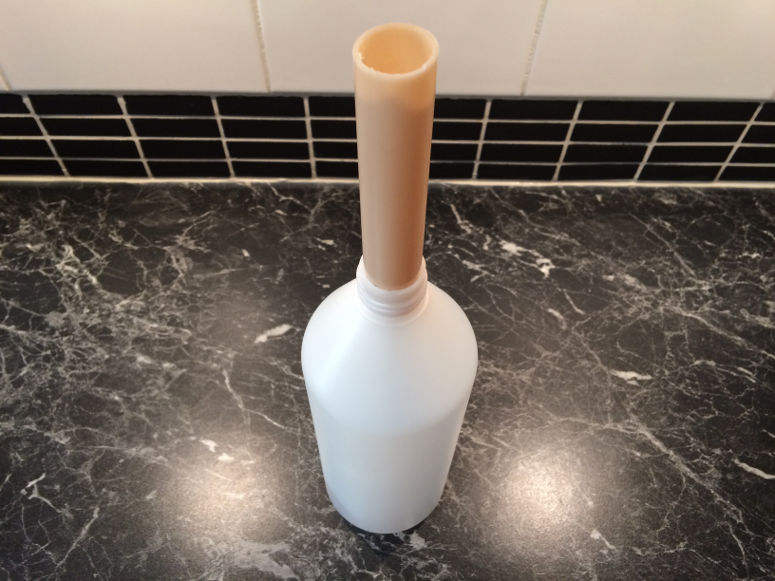
Шаг 4
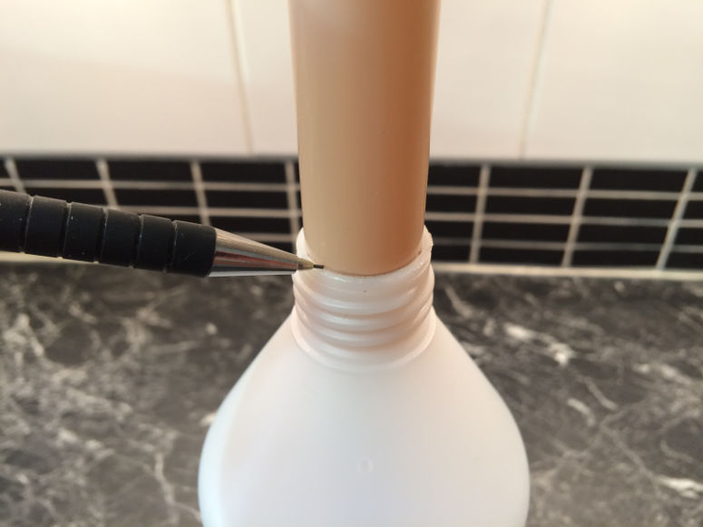
Шаг 5
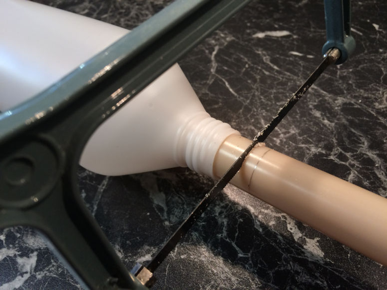
Шаг 6
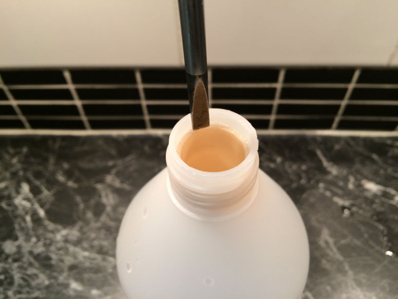
Шаг 7
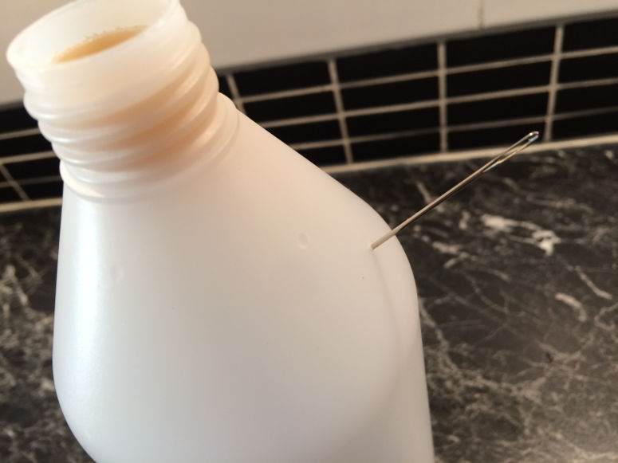
Шаг 8
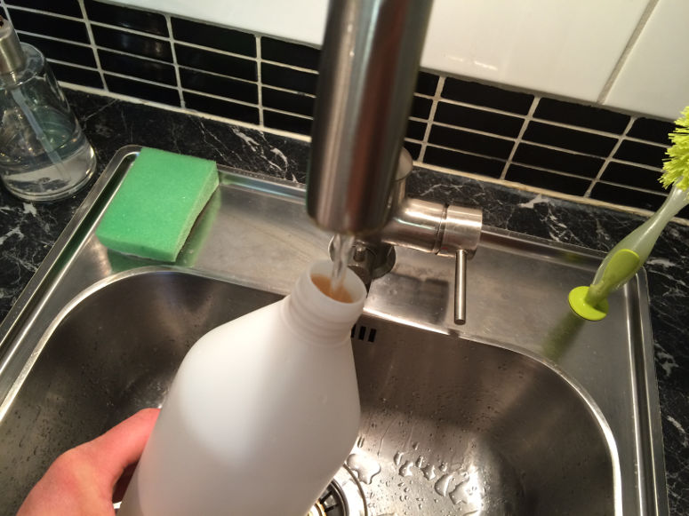
Шаг 9
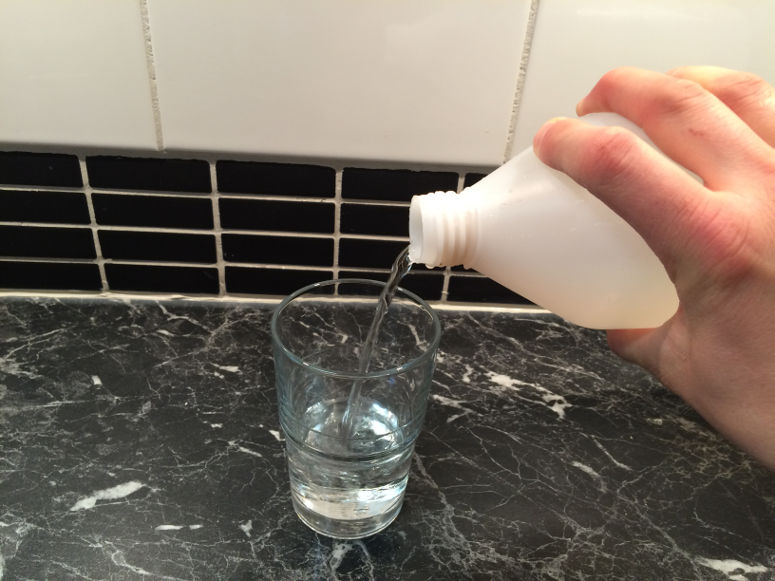
Шаг 10
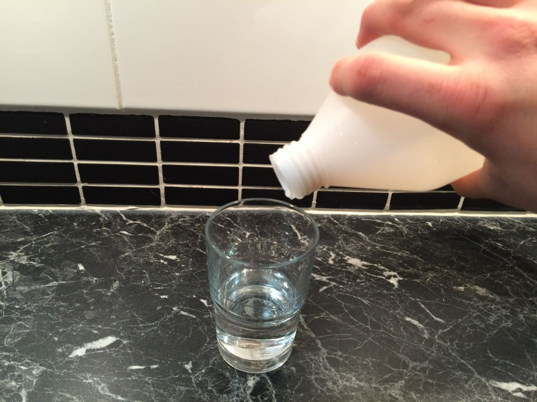
Шаг 11
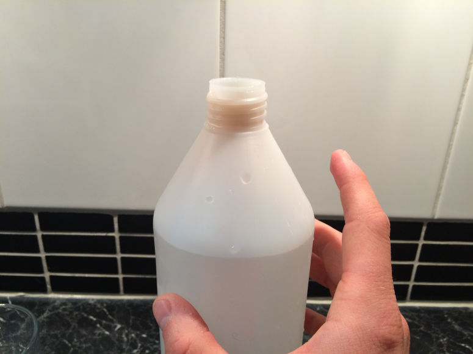
Шаг 12
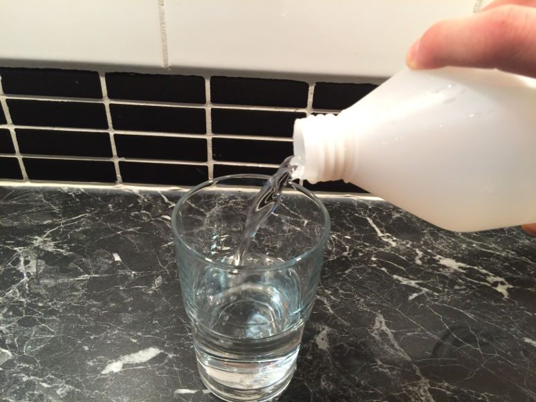
Краткое объяснение
Когда бутылка стоит вертикально, трубка наполняется водой. Когда вы переворачиваете бутылку, из неё выливается только вода из трубки. Вода из остальной части бутылки не выливается, потому что воздух не может попасть внутрь бутылки.Подробное объяснение
Когда бутылка стоит вертикально и вы не закрываете отверстие, трубка наполняется водой. Это происходит потому, что вода поступает в трубку снизу. Трубка наполняется до того же уровня, что и бутылка — то есть поверхность воды в трубке и в бутылке оказывается на одном уровне. Это происходит благодаря гравитации, которая тянет воду вниз настолько, насколько возможно, и таким образом обеспечивает, что уровень воды в обеих частях одинаковый.Когда вы закрываете отверстие — и переворачиваете бутылку — из неё выливается только вода из трубки. Почему вода из бутылки не попадает в трубку и не выливается больше? Это происходит в некоторой степени, и воздух внутри бутылки "растягивается", чтобы заменить ушедшую воду. Это означает, что молекулы воздуха оказываются дальше друг от друга. А это, в свою очередь, означает, что воздух меньше давит на поверхность воды внутри бутылки (меньше молекул воздуха сталкивается — и давит — на каждый квадратный миллиметр поверхности воды). С другой стороны, воздух снаружи бутылки — который теперь также находится в трубке — давит на поверхность воды в трубке как обычно и возвращает воду обратно в бутылку, не давая ей вылиться.
Когда вы опустошили трубку — поставьте бутылку обратно, не отпуская отверстие. Теперь представьте, как воздух давит на поверхность воды, как на дне трубки, так и внутри бутылки. А воздух в трубке давит сильнее, поэтому уровень воды в бутылке намного выше, чем в трубке. Теперь уберите палец с отверстия. Теперь воздух втекает через отверстие — благодаря тому, что давление снаружи выше. Давление воздуха в бутылке теперь такое же, как и снаружи. Теперь гравитация снова может работать, не мешая разница в давлении, и выравнивает уровень воды в трубке и бутылке.
Практический момент — зазор между трубкой и дном бутылки должен быть маленьким. Недостаток этого в том, что наполнять бутылку водой будет долго, но преимущество — почти никакая вода не попадет в трубку, если вы не отпустите отверстие.
Эксперимент
Вы можете превратить эту демонстрацию в эксперимент. Это сделает её лучшим научным проектом. Для этого попробуйте ответить на один из следующих вопросов. Ответ на вопрос будет вашей гипотезой. Затем проверьте гипотезу, выполнив эксперимент.- Что произойдет, если всё время держать отверстие закрытым?
- Что произойдет, если никогда не закрывать отверстие?
- Что произойдет, если сделать отверстие больше?
- Что произойдет, если увеличить зазор между трубкой и дном бутылки?
- Что произойдет, если трубка не будет плотно прилегать к внутренней части горлышка бутылки?
Вариации
Демонстрацию, конечно, можно провести и с прозрачной бутылкой. Также работает с трубкой, которая слишком тонкая и не прилегает плотно к горлышку. Тогда можно закрыть зазор пластилином или горячим клеем. В обоих случаях будет сложно скрыть от зрителей, что с бутылкой что-то не так, но вы всё равно сможете попробовать демонстрацию.| Gilla: | Dela: | |
Содержание сайта
© Архив Экспериментов. Весёлые и простые научные эксперименты для детей и взрослых. Биология, химия, физика, науки о Земле, астрономия, технологии, огонь, воздух и вода. Для детского сада, школы, после школы и дома. Также научные проекты и руководство для учителя.
Наверх
© Архив Экспериментов. Весёлые и простые научные эксперименты для детей и взрослых. Биология, химия, физика, науки о Земле, астрономия, технологии, огонь, воздух и вода. Для детского сада, школы, после школы и дома. Также научные проекты и руководство для учителя.
Наверх